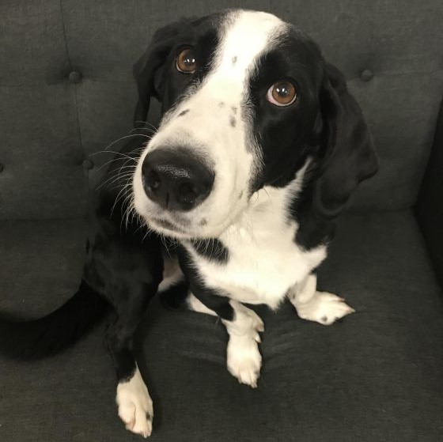
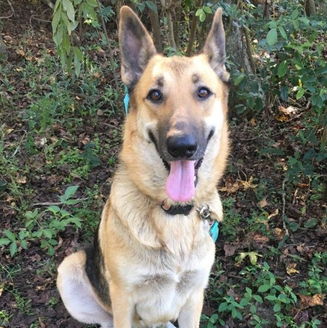
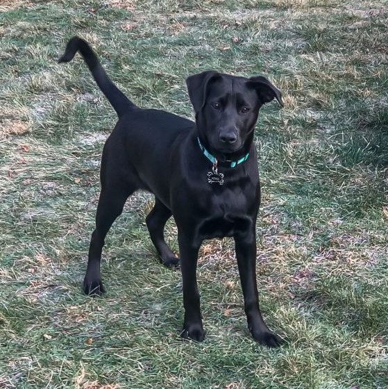
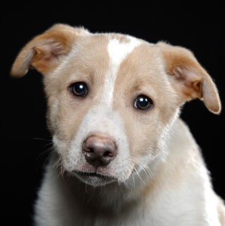

Adoptable Dogs
Click on the pictures to learn more about the furry ones!
| Picture | Age | Gender | Description | Location |
|---|---|---|---|---|
| Puppy | Female | Amethyst is a 6 month old hound/shepherd mix who has been learning how to be a very good dog at her CT foster mom's home. She is good with all people, loves playing with other dogs, and would be fine with dog savvy cats (she will try to get them to play with her). She'd be best in a home with older kids because she is still a puppy and can be mouthy and jumpy - typical puppy behavior. She is super intelligent, working on basic commands, and learning to walk nicely on the leash. She would love to be a member of an active family. Her foster thinks that she would be a great running or hiking companion and would excel at agility or nose work. Amethyst is currently in CT. | East Windsor, CT | |
|  | Adult | Female | Hello! My name is Molly and I am looking for my forever home! I am around five years old and I appear to be a basset hound/border collie mix. I weigh around 45 pounds and have a beautiful black and white coat. I am a low rider, and what I lack in legs I make up for with heart. I am a very well trained girl, and I know several cues! I do need to be your one and only, as I am looking for a home with no other pets. I am crate trained, and even find security in my crate. I am easygoing and love belly rubs! I also love being outdoors and playing with my toys so a fenced in yard would be amazing! I am looking for a home where school-aged children are the youngest members of the family. Men used to make me nervous, but I have made a lot of progress in that area! My new family will need to be committed to continuing my positive reinforcement training and should be prepared to sign me up for training classes. I appear to be mostly house-trained. Please reach out if you think you are the perfect home for me! | Boston, MA |
|  | Adult | Female | Lola was on the street being mistreated in a bad neighborhood. Rescued, she adores her foster sister. She is great in the car and pretty good on leash. She eats and sleeps in her crate without any issue. Lola will be very devoted to her family or individual. She's just a good, good girl! | Waltham, MA |
|  | Young | Female | I am a social butterfly that is full of energy and loves to play. I love to chase after balls, play tug-of-war, go for long walks and snuggle. I am aways up for an adventure and exploring --at just 7 months old I have already dipped my toes in to NH's lakes and hiked in the White Mountains. I am a show stopper- everywhere I go people always stop to tell me how beautiful my black/brown coat of fur is. I respond to my name really well and have been working on basic commands. I am house and crate trained. I sleep all through the night in my crate and love to nap on the couch. I enjoy playing with dogs of all sizes and ages. I would love to be in a home with another dog and/or older children to play with as I have lots of love and energy to share. | Manchester, NH |
|  | Puppy | Male | Hi, My name is Bailey and I love toys. I like playing with the other puppies or snuggling on your lap. I love to give kisses. An application will take you to the next steps. For puppies we look for stay-at-home or work-from-home, kids 8 and up, local homes only as these are very young puppies. We do lots of hand-holding with our puppy adopters and have all the supplies you need from crates to leashes, food and important supplements to help the pup develop into a healthy dog. | Sudbury, MA |
Not finding the companion you're looking for? Register your breed interest here to receive email when matching animals arrive at the shelter.